Created: 2019-10-16 Wed 17:46
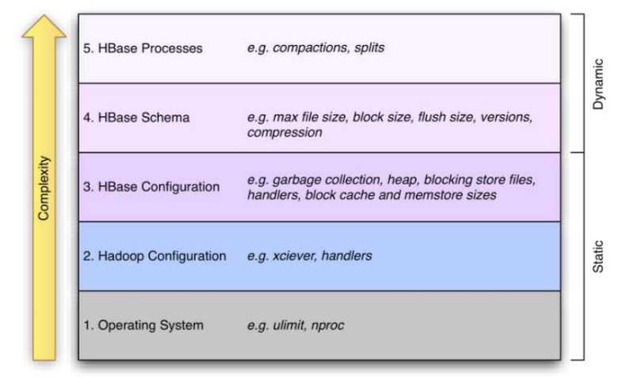
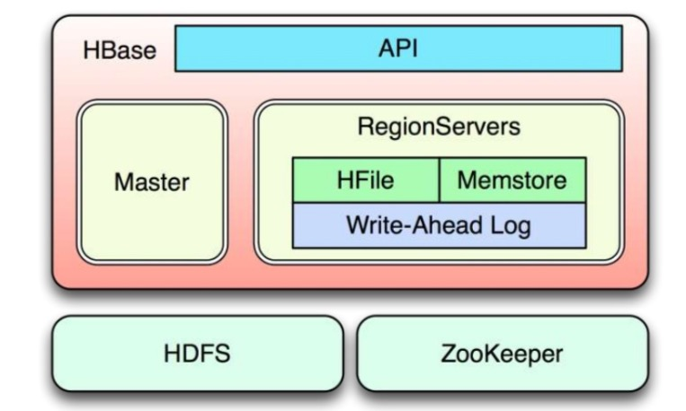
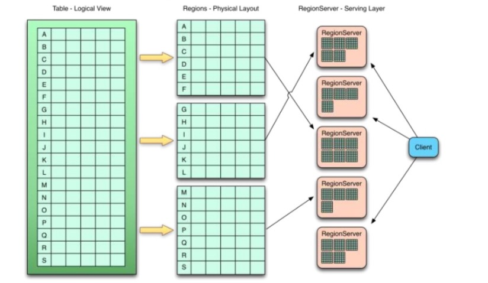
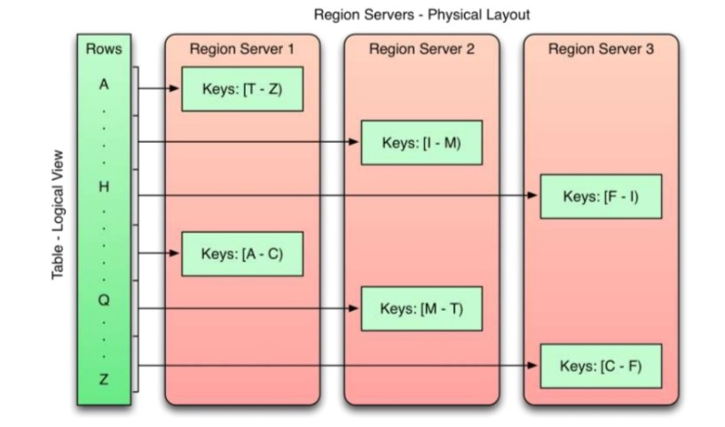
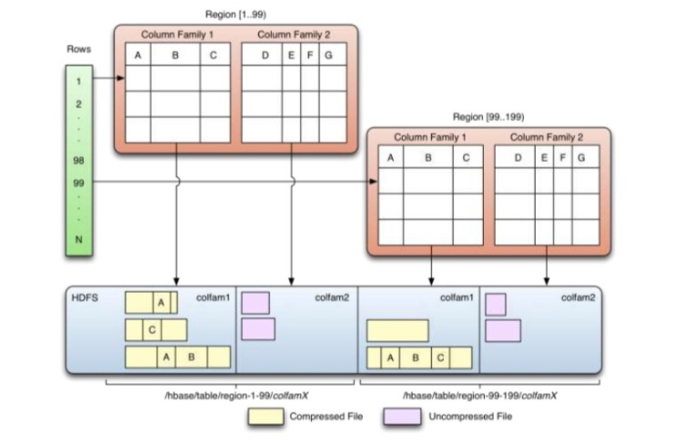
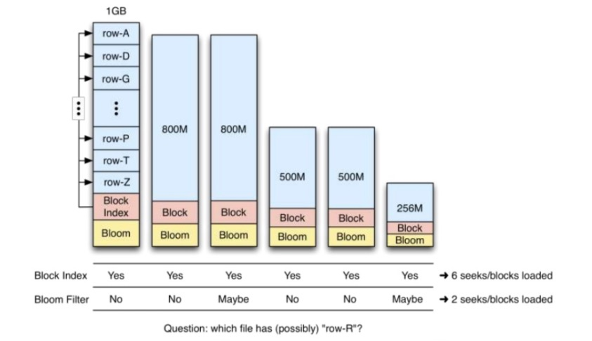
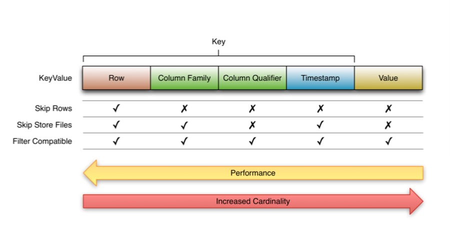
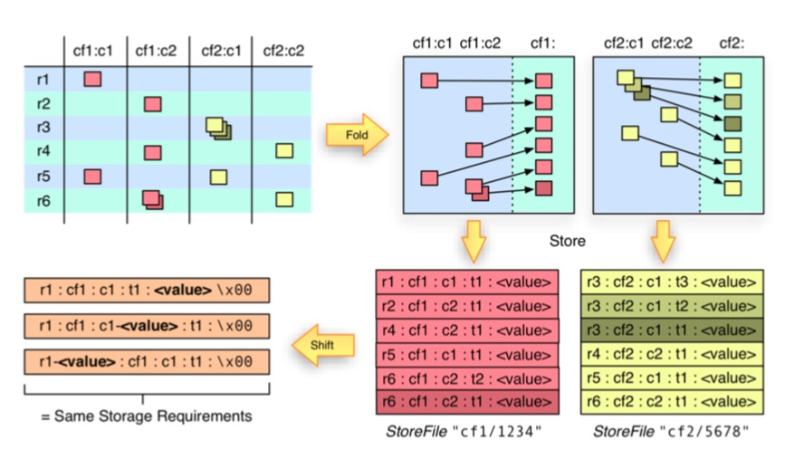
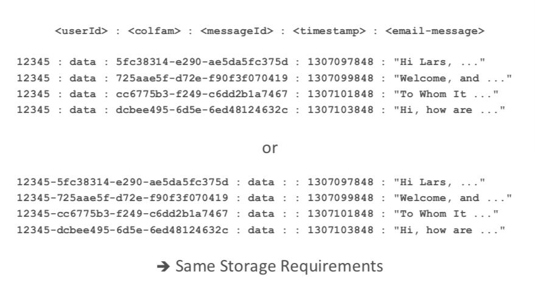
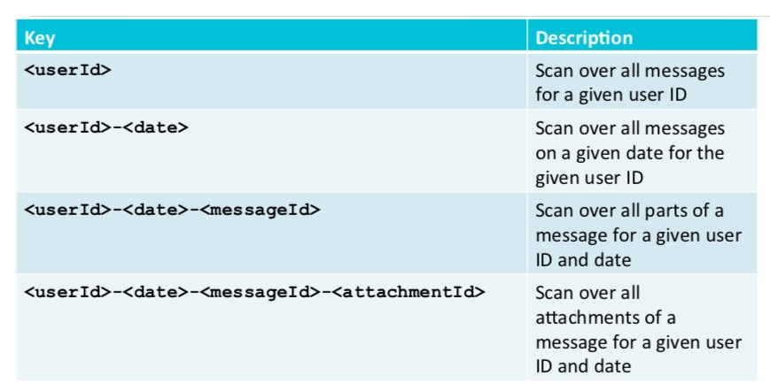
<timestamp><more key>: {CF: {CQ: {TS : Val}}}
0rowkey1, 1rowkey2, 2rowkey3 0rowkey4, 1rowkey5, 2rowkey6
0rowkey1 0rowkey4 1rowkey2 1rowkey5 …
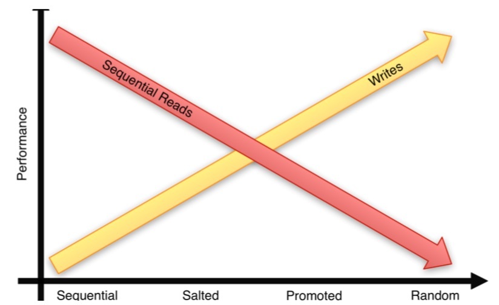
Created by yjwen.